Cotoni · 2 mesas redondas de pino · plano del 24 nov, corregido el 25 nov 2026
Plano de las mesas, paso por paso
El video de Lenny Montivero ("MESA RATONA ESTILO NORDICO") cuadro por cuadro, con tus medidas: dónde va la cola, dónde el tornillo, qué broca, a qué hondo, y cuándo va cada producto del acabado. Las medidas salen de la guía del 24 nov, con la base corregida el 25 nov.
Corregido el 25 nov: la base ahora es como la del video. La pata llega al piso y la punta de la cruz del piso choca contra su cara de adentro (antes la pata se paraba encima de la punta del brazo). La cruz de arriba va acostada, como las tablitas del video (antes iba de canto, con 7 cm de alto). La pata va con su cara de 9 cm hacia afuera y 2 tacos abajo, como en el video. Cambian el largo de las patas y de la cruz del piso, los hoyos y la caja de los tornillos de la tapa. Donde la guía del 24 nov dice otra cosa de la base, manda este plano.
10:10 Las 2 mesas del video: según su descripción, de 60 x 42 y de 55 x 38 cm, con tapa de melamina. Las tuyas: 80 cm x 60 de alto, tapa de pino pegada.
Ø 80 cmtapa de pino de 3.2 cm
60 cmde alto, cabales
15°patas y puntas de la cruz del piso
25 pasosdel cepillado al curado
Antes de empezar: 4 cosas que cambian todo
El video es una mesa ratona chica, no una de café. La descripción del video dice 60 cm de diámetro x 42 cm de alto (y otra de 55 x 38), con tapa de melamina blanca de 18 mm. La tuya es de 80 cm de diámetro x 60 cm cabales de alto, con tapa de pino pegada. Por eso casi ninguna medida del video sirve tal cual: la forma y el método sí; las medidas están calculadas para tu mesa de 80 x 60.
Las medidas suponen el 2x4 cepillado a 4.5 x 9 cm, el 2x3 a 4.5 x 7 y la tapa a 3.2 cm de grueso. Después de cepillar, mide de verdad. Si cambia algo, más abajo dice cómo recalcular.
Lo que compraste no es lo de la guía del 3 nov. Según tus facturas: tinte KAT-MD317 Miel (Protecto Madetec, Larach, 13 nov) en vez del Minwax Rojo Caoba, y 2 cuartos de barniz brillante para muebles Sherwin-Williams Sher-Wood (poliuretano, base solvente; La Mundial, 13 nov) en vez del poliuretano Minwax. Aquí va lo que tienes comprado.
Esta guía es de la mesa 1, "la del video". La mesa 2 (patas rectas con cruz) no sale en el video: va al final.
Diferencias entre el video y tu mesa
Tema
En el video
Qué seguir
Tamaño
60 cm x 42 de alto, mesa ratona
Guía: 80 cm x 60 de alto
Tapa
Melamina de 18 mm, canto pintado (9:48)
Guía: 6 tablas de pino de 3.2 cm pegadas, canto redondeado de 1/4"
Cruz de arriba
Tablitas de 18 mm de 55 cm, acostadas, a media madera, solo con cola (4:05, 7:43)
Igual, más gruesa: 2x3 de 74 cm acostado (4.5 de alto), a media madera, solo con cola
Pata con la cruz del piso
La pata llega al piso; la punta del brazo choca contra la pata; 2 tornillos de 2 1/2" desde afuera, tapados con "taruguito" (5:13 a 6:47)
Igual que el video: 2 tornillos de 5 x 70 desde la cara de afuera de la pata, tapados con espiga
Grueso de las patas
Puntales de 2x2, de 4.2 cm (0:09, 1:07)
Tus patas son de 2x4 (4.5 x 9): de lado se ven de 4.5, casi como las del video; por su cara de afuera, de 9
Medias maderas
Sierra de mesa, varias pasadas (1:47)
Circular (a 3.5 cm en la cruz del piso y a 2.25 en la de arriba) y formón
Cortes a 15°
Ingletadora con un tope (3:31)
Lo que tengas: ingletadora, o la circular con la escuadra rápida (cruz del piso) e inclinada a 15° (patas)
Avellanado
Avellanador, o "una mecha del 8" (5:26)
Broca de 10 mm: tus espigas son de 10 mm y la broca está en el juego del 14 nov
Tornillos de las patas
"Dos pulgadas y media" (5:56)
5 x 70 mm (La Mundial no tiene #8 x 2 1/2")
Tapa a la base
Tornillos desde abajo a través de la cruz (9:05)
2 por brazo, ranura en el brazo que cruza las vetas, tornillos de 40 mm y caja de 2.7 cm
Círculo
Router con brazo y "palito" en el centro (8:35)
Caladora, después router con compás
Acabado
Ninguno en el pino
Comejenol, tinte y barniz (lo que compraste)
Plano de la mesa 1 (la del video)
Todas las medidas en cm. Los dibujos están a escala. Toca "Ampliar dibujo" para verlo más grande y deslizar.
Vista de frente
Vista de frente, como la del video (10:00): las patas llegan al piso y la cruz del piso va entre ellas. El poste del centro es la pata del otro brazo, que se ve por su cara de 9 cm, con sus 2 tacos. 49.3 es de afuera a afuera de las patas, arriba; 52.3 es el alto de la pata en vertical.
Alto total: 60.0 = 3.2 de tapa + 4.5 de cruz de arriba (acostada) + 52.3 de pata (en vertical). La pata llega al piso.
En el piso, la cara de adentro de cada pata queda a 34.0 cm del centro: ahí choca la punta del brazo, que mide 68.0 en el piso. La cara de afuera queda a 38.7: 77.3 de afuera a afuera.
Arriba, la cara de afuera de la pata queda a 12.4 cm de la punta de la cruz de arriba (en el video, 8.2 de una cruz de 55).
La tapa de 80 queda 3 cm afuera de las puntas de la cruz de arriba (en el video, 2.5) y 1.3 afuera de las patas en el piso.
15° en la madera: la raya se corre 1.88 cm en una cara de 7 (puntas del brazo) y 1.21 cm en una de 4.5 (puntas de la pata).
Cruz del piso, vista de arriba
Cruz del piso vista desde arriba. Arriba mide 64.2 y en el piso 68.0: la punta inclinada se ve desde arriba. Cada pata se para en el piso, afuera de la punta del brazo.
Donde se para la pata: 4.7 cm a lo largo del brazo y 9 de ancho.
Tornillos: 2 de 5 x 70 por pata, uno encima del otro, desde la cara de afuera de la pata hacia la punta del brazo (paso 14); 2 de 40 mm en el cruce, desde la cara de PISO, a 1.2 cm de las esquinas.
Punta inclinada a 15°: choca contra la cara de adentro de la pata.
Cruz de arriba, vista de arriba
Cruz de arriba, acostada, vista desde la cara que va contra la tapa, con el contorno de la tapa de 80. Las líneas finas solo muestran hacia dónde van las tablas.
Pata (está abajo): empieza a 12.4 cm de la punta, mide 4.7 a lo largo del brazo y 9 de ancho; sale 1 cm a cada lado del brazo, que mide 7.
Tornillo de la pata, 5 x 70, desde esta cara: 2 por pata, a 14.7 cm de la punta y a 1.75 a cada lado del centro; caja de 10 mm a 1.0 cm.
Tornillo de la tapa, 40 mm, desde abajo: a 5 y 28 cm de la punta, caja de 10 mm a 2.7 cm.
En el brazo que cruza las tablas, el paso es una ranura de 1 cm.
La pata
La pata de 2x4 vista por su canto de 4.5, con la cara de 9 acostada. Las 2 puntas a 15°, paralelas. Rayado: lo que sobra de la pieza de unos 57 cm.
Lista de cortes (mesa 1)
Pieza
Cuántas
Medida
Madera
Puntas
Tablas de la tapa
6
91 cm
1 1/2 x 6
Rectas
Cruz del piso
2
68.0 cm abajo, 64.2 arriba
2x3 (4.5 x 7), de canto
A 15°, la punta larga en el piso
Patas
4
Cada canto largo 54.1 cm; ocupa 55.4 cm de pieza (se cortan primero a unos 57)
2x4 (4.5 x 9), la cara de 9 hacia afuera
Las 2 a 15°, paralelas, vistas en el canto de 4.5
Cruz de arriba
2
74 cm
2x3, acostada
Rectas
Si tus piezas miden otra cosa después de cepillar
Alto de la pata (vertical) = 60 menos el grueso de la tapa, menos el grueso de la cruz de arriba acostada.
Canto largo de la pata = alto vertical × 1.035. Lo que ocupa de pieza = canto + grueso de la pata a lo largo del brazo × 0.268.
Brazo del piso, en el piso = 77.3 menos 2 × (grueso de la pata a lo largo del brazo × 1.035). Con 4.5: 68.0.
Arriba, de afuera a afuera de las patas = 77.3 menos 2 × alto vertical × 0.268. Con 52.3: 49.3.
Caja de los tornillos de la tapa (40 mm, que quede 1 cm sin tocar) = grueso de la cruz de arriba + grueso de la tapa − 5. Con 4.5 y 3.2: 2.7.
Tornillos, brocas, cola y tacos
Unión
Tornillo
Broca guía
Caja (avellanado)
Cola
Tacos
Media madera de la cruz del piso
2 de los que tienes (3.5 o 4 x 40 mm)
3 mm en las 2 piezas; 4 mm en la de abajo
10 mm, 1.5 cm de hondo, desde la cara de PISO
Fondo y 2 costados del hueco, en las 2 piezas
No (quedan abajo)
Media madera de la cruz de arriba
No lleva, como el video (con 4.5 de grueso, uno de 40 mm se sale)
Fondo y 2 costados del hueco, en las 2 piezas
No
Pata a cruz del piso
2 de 5 x 70 mm por pata, desde la cara de afuera de la pata, derechos a la cara; entran 3.5 cm en el brazo
5 mm en la pata; 3 mm x 3.5 cm en la punta del brazo
10 mm, 1.0 cm, en la cara de afuera de la pata
Punta del brazo (2 manos) y la cara de adentro de la pata
Sí: espiga de 10 x 40, a ras (8 por mesa)
Cruz de arriba a pata
2 de 5 x 70 mm por pata, desde la cara que va contra la tapa; entran 3.5 cm en la pata
5 mm en la cruz; 3 mm x 4 cm en la punta de arriba de la pata
10 mm, 1.0 cm
Punta de arriba de la pata (2 manos)
No (quedan debajo de la tapa)
Tapa a cruz de arriba
2 de 40 mm por brazo (8 por mesa)
4 a 5 mm en la cruz (ranura de 1 cm en el brazo que cruza las tablas); 3 mm x 2 cm en la tapa
10 mm, 2.7 cm desde abajo
No (a lo sumo un punto en el centro)
No
Las brocas de 3, 4, 5 y 10 mm están en tu juego de 1 a 10 mm (La Mundial Suyapa, 14 nov).
Profundidad exacta: pon una banderita de masking en la broca a la medida de la caja y para cuando la cinta toque la madera.
Cola en las puntas (madera de punta): chupa la cola. Pon una mano delgada, espera 5 minutos y pon otra antes de juntar. Aun así, en esas uniones el que aguanta es el tornillo.
Sobrante de cola: ráspalo con el formón cuando esté gomoso (de 20 a 45 minutos). No con trapo mojado: la mete en la madera y después el tinte deja mancha clara.
Espigas (tus "tacos"): las 20 de 10 x 40 mm de Larach: 8 en la mesa 1 (2 por pata, abajo, como los taruguitos del video) y 4 en la mesa 2. Sobran 8.
Los 25 pasos
"Video" es lo que hace Lenny; la ficha es lo que haces tú. Los cuadros del video tienen el minuto. Donde el paso no sale en el video, o donde tu mesa se hace distinto, va un dibujo. En el teléfono, desliza los dibujos a los lados o toca "Ampliar dibujo".
A. Antes de cortar
No sale en el video.
1
Medir la humedad y escoger las piezas
No sale en el video. Fuente: guía del 3 nov.
Las 2 puntas del medidor a lo ancho de la veta, en 3 puntos de cada pieza.
Herramienta
El medidor, en modo pino.
Broca o fresa
No lleva.
Tornillo
No lleva.
Medidas
Sigue si todas marcan de 10 a 13% y no hay más de 2 puntos de diferencia entre ellas. El 14 nov marcaron 13%.
Mide cada pieza en 3 puntos con el medidor (modo pino), con las puntas metidas a lo ancho de la veta.
Escoger: las 4 tablas más bonitas de 1 1/2 x 6 para las tapas. En la base, nudos lejos de las medias maderas y de las puntas de las patas.
Ojo: cepillar y pegar madera arriba de 14%: la tapa se abre en las juntas cuando seca.
2
Cepillar con el cepillo eléctrico
Video 0:20 (no muestra cómo)
Video: "ayer las repasé un poquito para que queden un poquito más limpias". No muestra cómo.
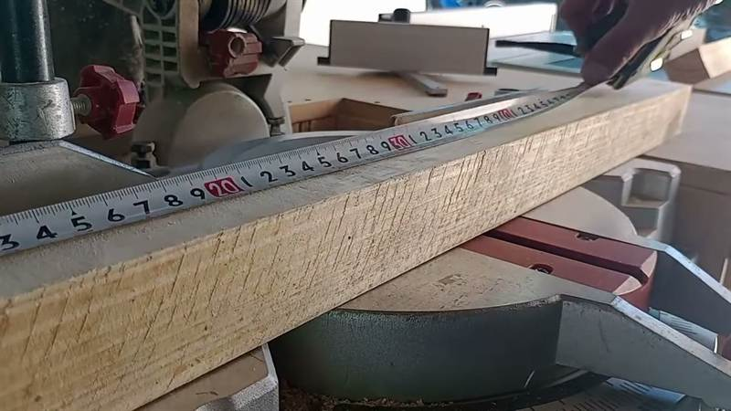
0:22 Las piezas ya repasadas, en la ingletadora. El cepillado no sale.
Cantos para la tapa: 2 tablas cara con cara, como un libro cerrado, y se cepillan juntas. Al abrirlas, la junta cierra.
Herramienta
Tu cepillo eléctrico. Una regla o el canto de un sargento para revisar.
Broca o fresa
No lleva.
Tornillo
No lleva.
Medidas
Profundidad 0.5 mm para acabar, 1 mm como máximo para quitar. Tapas a 3.2 cm (o al grueso de la más delgada). 2x4 a 4.5 x 9 y 2x3 a 4.5 x 7, o a lo que dé parejo. Anota las medidas reales.
Profundidad: 0.5 mm para acabar, 1 mm como máximo para quitar. Desconéctalo para ajustar.
Primero una cara: raya la cara con lápiz en zigzag, cepilla los puntos altos hasta que las rayas se borren parejo y revisa con una regla o con el canto de un sargento.
Al empezar cada pasada, el peso va en la zapata de adelante; al terminar, en la de atrás. Así no se comen las puntas.
Si la madera se astilla, cepilla en el otro sentido de la veta.
Cantos para pegar la tapa: junta 2 tablas cara con cara, como un libro cerrado, prénsalas parejas y cepilla los 2 cantos a la vez. Si el cepillo queda un poco chueco, al abrirlas los ángulos se compensan y la junta cierra. Revisa a contraluz: sin rendijas.
Grueso: marca una línea a 3.2 cm alrededor de cada tabla (o al grueso de la más delgada) y cepilla hasta la línea. Las 12 tablas de las tapas, iguales.
Bases: 2x4 a 4.5 x 9 y 2x3 a 4.5 x 7, o a lo que dé parejo. Anota las medidas reales.
Seguridad: lentes y mascarilla; espera que la cuchilla pare antes de bajarlo; apóyalo en su pie.
Ojo: cepillar la madera días antes de pegar. Cepilla y pega el mismo día o al siguiente.
B. La tapa
En el video es melamina comprada; aquí sale de la guía del 3 nov.
3
Cortar y acomodar las 6 tablas
No sale en el video (él usa melamina comprada).
Arriba: el triángulo de lápiz sobre las 6 tablas. Abajo: las puntas, con los anillos alternados.
Herramienta
Circular y escuadra.
Broca o fresa
No lleva.
Tornillo
No lleva.
Medidas
6 tablas de 91 cm por mesa (3 salen de cada tabla de 10 pies). Corte recto.
Corte recto con la circular y la escuadra.
Alterna los anillos de la punta: una con la curva hacia arriba y la siguiente hacia abajo.
Dibuja un triángulo de lápiz sobre las 6 para no perder el orden.
Ojo: poner todas con los anillos igual: la tapa se arquea.
4
Pegar la tapa
No sale en el video.
Cola en los 2 cantos de cada junta. Sargentos a 10, 33.7, 57.3 y 81 cm de una punta, alternados abajo y arriba. Encima, 2 listones de través.
Herramienta
Tus 4 sargentos Truper de 120, la brocha de 1.5", 2 listones rectos con masking y el formón para raspar.
Broca o fresa
No lleva.
Tornillo
No lleva.
Cola
Capa delgada y pareja en los 2 cantos de cada junta (5 juntas), con la brocha de 1.5". Nada en las caras.
Medidas
Sargentos a 10, 33.7, 57.3 y 81 cm de una punta, alternados 2 abajo y 2 arriba. De 30 a 60 minutos apretada; nada de esfuerzo en 24 horas.
Pon la cola en los cantos y junta las tablas en el orden del triángulo.
Sargentos alternados 2 abajo y 2 arriba. Encima, 2 listones rectos de través con masking para que no se peguen, prensados, para que quede plana.
Aprieta parejo hasta que salga una línea de gotitas.
Raspa la cola gomosa a los 20 a 45 minutos con el formón. No con trapo mojado: la mete en la madera y después el tinte deja mancha clara.
Con 4 sargentos pegas una tapa, la sueltas a la hora y pegas la otra.
Ojo: apretar de más (saca toda la cola y la junta queda débil) o dejar un escalón entre tablas.
5
Aplanar la tapa (24 horas después)
No sale en el video.
Primero en diagonal a las tablas, después a lo largo. Revisa con la regla en cruz.
Herramienta
Cepillo eléctrico, lijadora orbital y la regla.
Lija
80 y luego 120. La 80 no la tienes: está en "Lo que falta comprar".
Tornillo
No lleva.
Medidas
Quita solo los escalones.
Cepillo eléctrico en diagonal a las tablas, después a lo largo, quitando solo los escalones.
Termina con la lijadora orbital, lija 80 y luego 120.
Ojo: cepillar en un solo lugar y hacer un hundido. Revisa con la regla en cruz.
C. La base
Aquí empieza el video.
6
Cortar las piezas a lo largo
Video 0:20 a 0:50
Video: marca con la escuadra rápida de grados (la negra triangular) y corta en la ingletadora (0:27, 0:40).
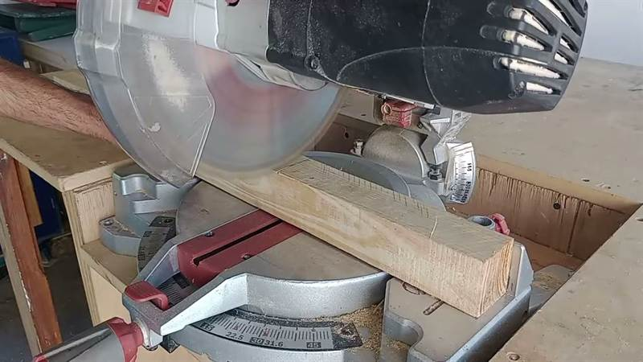
0:27 La pieza en la ingletadora.
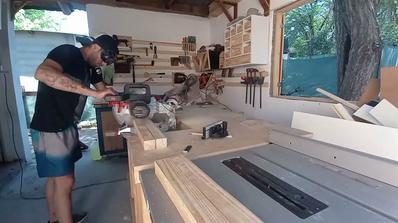
0:40 Corta en la ingletadora.
Herramienta
Circular guiada con la escuadra rápida, o ingletadora si tienes.
Broca o fresa
No lleva.
Tornillo
No lleva.
Medidas
Cruz del piso: 2 de 2x3 a 68.0 cm, puntas rectas por ahora. Cruz de arriba: 2 de 2x3 a 74 cm. Patas: 4 de 2x4 a unos 57 cm (el largo final sale en el paso 10).
Ojo: cortar las puntas a 15° antes de la media madera. Lenny hace primero el encastre y después los ángulos.
7
Marcar las medias maderas
Video 0:50 a 1:47
Video: "marcar el centro, que en este caso son 24.6" (su brazo mide 49.2) y "esto mide 4.2, así que serían 2.1 para cada lado". Cruza una pieza sobre la otra para marcar el ancho (1:22).
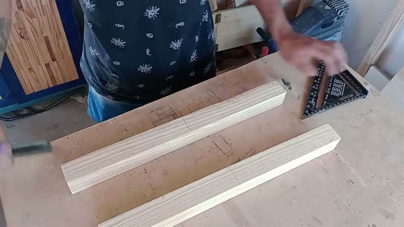
1:07 Marca con la escuadra triangular.
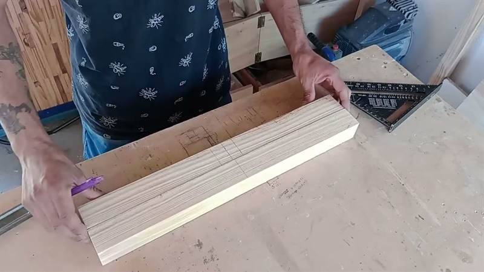
1:22 Marca el ancho con lápiz.
Arriba, la cruz del piso, de canto: centro a 34.0, hueco de 4.5 de ancho y 3.5 de hondo. Abajo, la cruz de arriba, acostada como las tablitas del video: centro a 37.0, hueco de 7 de ancho y 2.25 de hondo. Medidas en cm.
Herramienta
Escuadra, lápiz y la otra pieza de la cruz.
Broca o fresa
No lleva.
Tornillo
No lleva.
Medidas
Cruz del piso (de canto): centro a 34.0 cm; a cada lado, la mitad del ancho de la otra pieza, 2.25 cm; hondo, la mitad del alto, 3.5 cm. Cruz de arriba (acostada): centro a 37.0; a cada lado 3.5 (el hueco mide 7, el ancho de la otra pieza acostada); hondo 2.25, la mitad de 4.5.
Ojo: marcar el ancho con la cinta. Pon la otra pieza encima y marca contra ella: el ancho real manda.
8
Cortar las medias maderas
Video 1:47 a 2:25
Video: sierra de mesa con la hoja a media altura, pasada tras pasada.
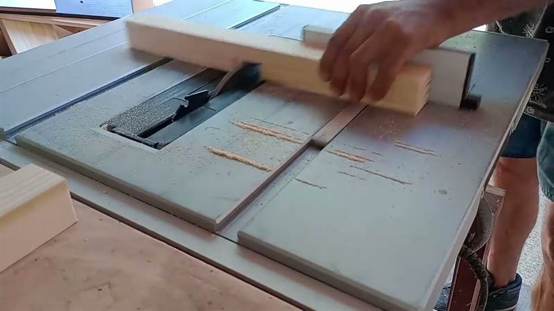
2:10 Lenny usa la sierra de mesa, pasada tras pasada.
El hueco de la cruz del piso. 1: los 2 cortes de los lados, por dentro de la raya. 2: cortes cada 5 mm en medio. 3: rompe los pedacitos y deja el fondo plano con el formón. La cruz de arriba, igual, a 2.25 de hondo.
Herramienta
Circular con la profundidad en 3.5 cm para la cruz del piso y en 2.25 cm para la de arriba (pruébala en un retazo), prensas y el formón de 7/8".
Broca o fresa
Otra forma de limpiar el fondo: el router con la broca recta de 12 mm.
Tornillo
No lleva.
Medidas
Hondo 3.5 cm en la cruz del piso y 2.25 cm en la de arriba. Cortes cada 5 mm.
Prensa las 2 piezas de una cruz lado a lado y córtalas juntas.
Primero las 2 rayas de los lados, por dentro de la raya; después cortes cada 5 mm en medio.
Rompe los pedacitos con el formón y deja el fondo plano con el formón de 7/8".
Prueba: tiene que entrar apretada con la mano, y las 2 piezas quedan parejas arriba y abajo. Floja, la cola no la salva.
Ojo: un hueco más hondo que el otro: la cruz no queda pareja y la mesa cojea.
9
Puntas a 15° de la cruz del piso
Video 2:25 a 3:22
Video: "un corte de ángulo de 15 grados... tengan cuidado porque son diferentes... de la punta que va a dar el piso hacia adentro".
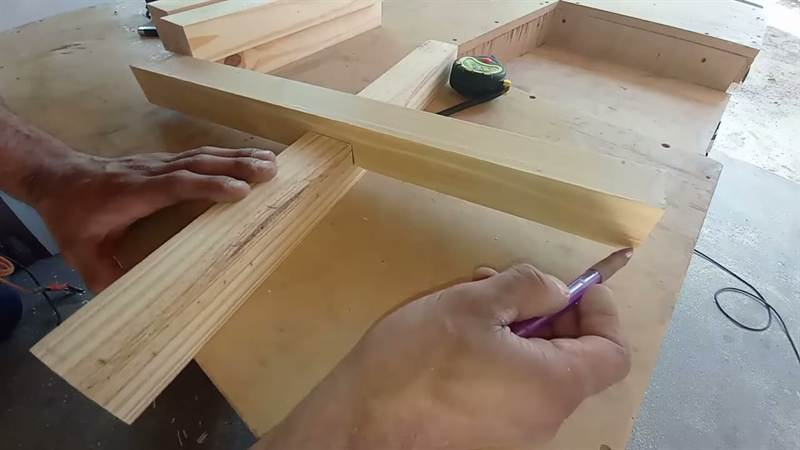
2:32 La cruz armada en seco, antes de cortar los ángulos.
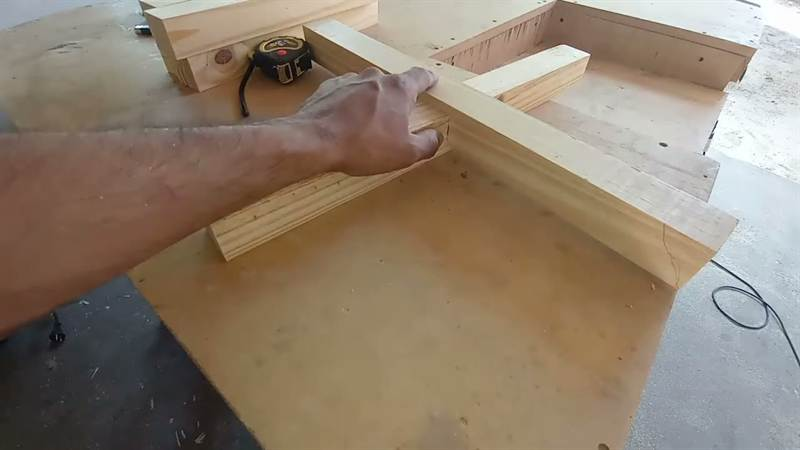
3:05 La cruz del piso.
Las 2 piezas de la cruz del piso. Una tiene el hueco arriba y la otra en la cara de PISO, pero en las 2 la punta larga va en la cara de PISO. Esa punta inclinada es la que choca contra la pata (paso 14).
Herramienta
Circular apoyada en la escuadra rápida puesta en 15° (o la ingletadora en 15°).
Broca o fresa
No lleva.
Tornillo
No lleva.
Medidas
En el costado, desde la esquina del piso hacia adentro: arriba se corre 1.88 cm. Queda 68.0 abajo y 64.2 arriba.
Arma la cruz en seco y escribe PISO en la cara de abajo de las 2 piezas.
En el costado de cada punta, raya desde la esquina del piso hacia adentro: arriba se corre 1.88 cm.
Acuesta la pieza sobre el costado rayado, raya hacia arriba, y corta con la circular apoyada en la escuadra rápida puesta en 15° (o con la ingletadora en 15°).
Ojo: (el que avisa Lenny) en una pieza el hueco está en la cara de arriba y en la otra en la de PISO. Por eso no se cortan igual: la punta larga siempre va en la cara de PISO.
10
Las 4 patas a 15°, paralelas
Video 3:22 a 4:05
Video: "cortar las patas también con un ángulo de 15 grados, que queden de manera paralela el corte, este para adentro y este para allá... poner un tope así las cuatro patas salen iguales".
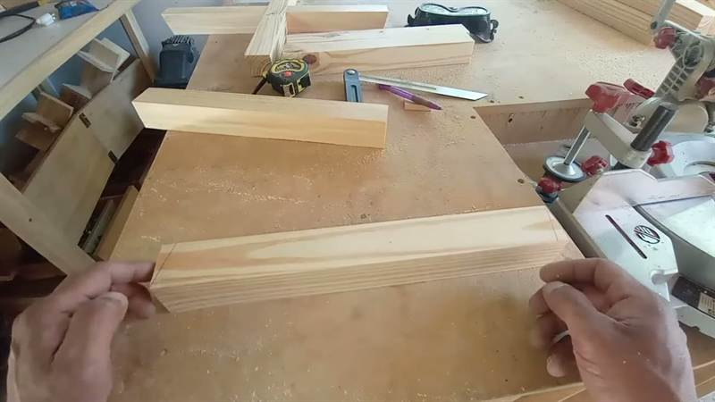
3:25 Las piezas de las patas.
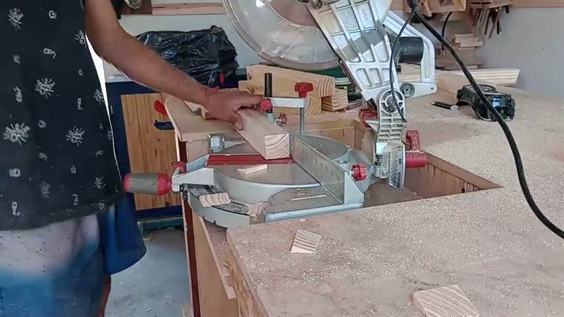
3:43 Corta las patas en la ingletadora.
Las 2 puntas de la pata van paralelas. Si volteas la pieza entre los 2 cortes sale un trapecio. Las medidas completas están en el dibujo de la pata, arriba.
Herramienta
Circular inclinada a 15° (el bisel de la base), guiada con la escuadra rápida a 90°. O ingletadora con el bisel en 15° y un taco de tope, como Lenny.
Broca o fresa
No lleva.
Tornillo
No lleva.
Medidas
2x4 acostado sobre la cara de 9 cm. En el canto de 4.5 la raya se corre 1.21 cm. 54.1 cm por un canto largo. Cada pata se come 55.4 cm de pieza.
Acuesta el 2x4 sobre la cara de 9. Raya esa cara a escuadra (90°); en el canto de 4.5, la raya va a 15° y se corre 1.21 cm.
Primera punta: la circular inclinada a 15°, siguiendo la raya.
Mide 54.1 cm por un canto largo y corta la segunda punta paralela a la primera, sin voltear la pieza.
Corta la primera pata, revísala parada (ver el dibujo de la pata, arriba), y úsala de plantilla para rayar las otras 3.
Ojo: voltear la pieza entre los 2 cortes: sale un trapecio en vez de un paralelogramo y la pata no se para.
11
La cruz de arriba
Video 4:05 a 4:28
Video: "corté estas tablitas de 18 mm de espesor, le hice media tabla también, estas tienen 55 cm... solamente las voy a pegar con cola".
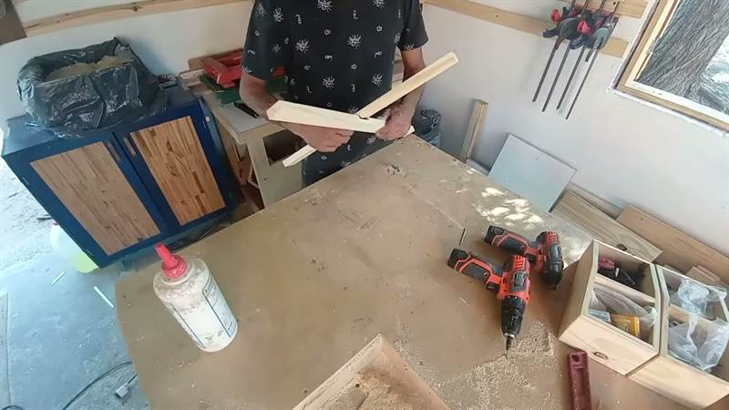
4:10 Las tablitas de la cruz de arriba del video van acostadas. La tuya también: 2x3 acostado.
Herramienta
Las mismas de los pasos 7 y 8.
Broca o fresa
No lleva.
Tornillo
No lleva en el cruce (paso 12).
Medidas
2x3 de 74 cm, acostado (4.5 de alto, 7 de ancho), puntas rectas. Media madera: centro a 37.0 cm, hueco de 7 de ancho y 2.25 de hondo.
Marca y corta la media madera igual que en los pasos 7 y 8, con las 2 piezas acostadas.
Pruébala en seco: las 2 piezas quedan parejas por la cara de la tapa.
Ojo: lo mismo que en los pasos 7 y 8: marca el ancho contra la otra pieza y que entre apretada con la mano.
12
Pegar y atornillar las 2 cruces
Video 4:28 a 5:09
Video: "al que va por el piso le voy a hacer dos perforaciones para dos tornillos... por más que esté bastante bien ajustadito, para que no se vaya a querer salir".
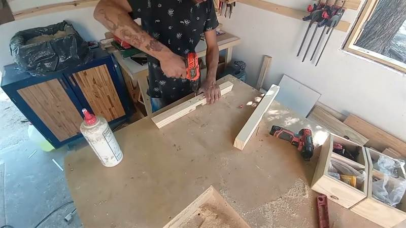
4:37 Perfora la cruz del piso para 2 tornillos.
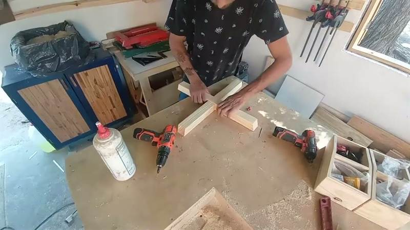
4:52 Junta la cruz.
Cruce de la cruz del piso. Izquierda: el cuadrito del cruce visto desde la cara del tornillo, con los 2 tornillos en diagonal. Derecha: corte por un tornillo; la cola (amarillo) en el fondo y los 2 costados del hueco. Medidas en cm.
Cola: fondo y 2 costados del hueco, en las 2 piezas, en las 2 cruces.
Tornillo de 40 mm, solo en la cruz del piso: caja de 10 mm a 1.5 cm, paso de 4 mm en la pieza de abajo, guía de 3 mm en la otra. Entra 2 cm.
Herramienta
Taladro, escuadra y una prensa chica.
Broca o fresa
Cruz del piso: caja de 10 mm a 1.5 cm de hondo; paso de 4 mm en la pieza de abajo; guía de 3 mm en la otra.
Tornillo
Cruz del piso: 2 en el cruce, de los 40 mm que tienes (3.5 o 4 x 40 mm). Cruz de arriba: no lleva, como el video: con 4.5 cm de grueso, un tornillo de 40 mm se sale por el otro lado. La sujetan la cola y los tornillos de las patas y de la tapa.
Cola
En el fondo y los 2 costados del hueco, en las 2 piezas, en las 2 cruces.
Medidas
Los 2 tornillos en diagonal dentro del cuadrito de 4.5 x 4.5, a 1.2 cm de las esquinas.
Cola en el fondo y los 2 costados del hueco, en las 2 piezas.
Encaja y revisa los 4 ángulos a 90° con la escuadra.
Cruz del piso: 2 tornillos desde la cara de PISO. Cruz de arriba: solo cola, como Lenny (4:16).
Apriétalas 30 minutos con una prensa chica.
Ojo: los 2 tornillos en línea con la veta: rajan la pieza.
13
Perforar y avellanar
Video 5:13 a 5:56
Video: 2 hoyos abajo en cada pata y "vamos a avellanar los huecos un poquito; si no tienen mecha avellanadora pueden usar una mecha del 8... para después poner un taruguito y que no se vea el tornillo".
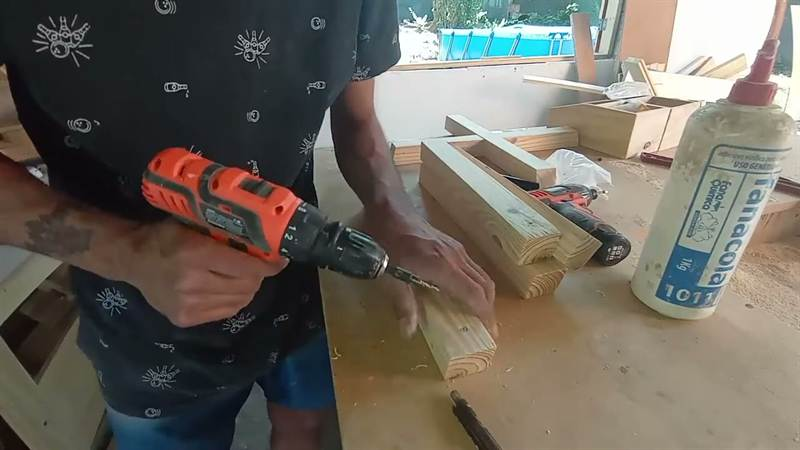
5:25 Lenny perfora la pata.
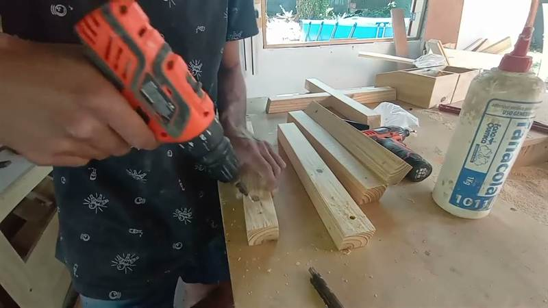
5:41 Avellana el hoyo.
Igual que Lenny: los hoyos van en la pata, cerca de la punta que toca el piso. La pata acostada con su cara de afuera (la de 9) hacia arriba, vista por el canto. Medidas en cm.
Herramienta
Taladro, banderita de masking en la broca y un clavo para marcar.
Broca o fresa
Pata: caja de 10 mm a 1.0 cm de hondo y paso de 5 mm hasta salir. Cruz de arriba: lo mismo, caja de 10 mm a 1.0 cm y paso de 5 mm. Las guías de 3 mm se hacen al armar (pasos 14 y 15).
Tornillo
5 x 70 mm: 2 por pata abajo y 2 por pata arriba.
Medidas
Pata: en el centro de la cara de 9, a 3.5 y 6.5 cm de la esquina de abajo, medido sobre la cara de afuera. Cruz de arriba: a 14.7 cm de cada punta, uno a cada lado del centro, a 1.75 cm.
Para cada pata junto a su brazo, como va a quedar, y escribe con lápiz AFUERA en la cara de 9 que mira hacia afuera y PISO en la punta de abajo.
Acuesta la pata con la cara de AFUERA hacia arriba. En el centro de esa cara marca 2 puntos a 3.5 y 6.5 cm de la esquina de la punta de PISO.
Caja de 10 mm a 1.0 cm de hondo (banderita de masking), derecho a la cara, y después paso de 5 mm hasta salir por la cara de adentro.
Cruz de arriba: en la cara que va contra la tapa, a 14.7 cm de cada punta, 2 puntos a 1.75 cm de cada lado del centro. Caja de 10 mm a 1.0 cm y paso de 5 mm hasta salir.
Profundidad exacta: pon una banderita de masking en la broca a la medida de la caja y para cuando la cinta toque la madera.
Ojo: perforar la cara o la punta equivocada: los hoyos van en la cara de afuera y cerca de la punta del piso. Por eso se marcan AFUERA y PISO antes.
14
Patas a la cruz del piso
Video 5:56 a 6:47
Video: "unos tornillos de dos pulgadas y media, así queda bastante bien agarrado... fíjense que queden bien a 90 grados y que los encastren lo mejor posible".
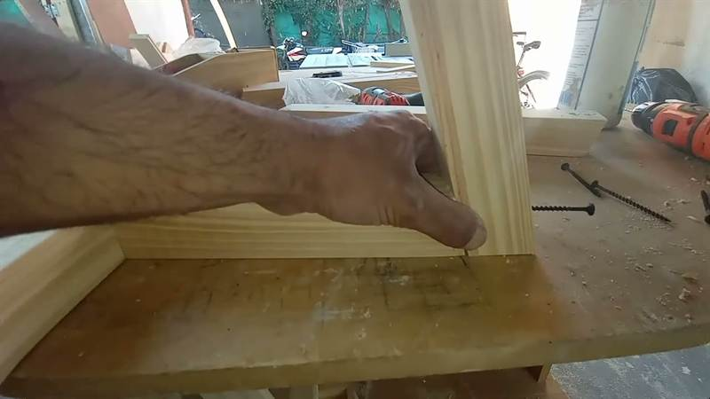
6:00 La punta del brazo choca contra la cara de adentro de la pata, y las 2 tocan la mesa. Así va la tuya.
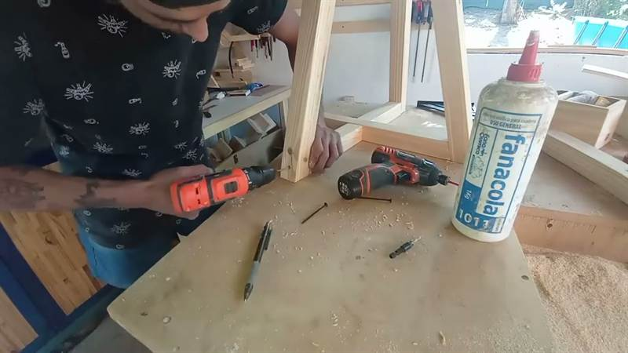
6:12 Atornilla desde la cara de afuera de la pata.
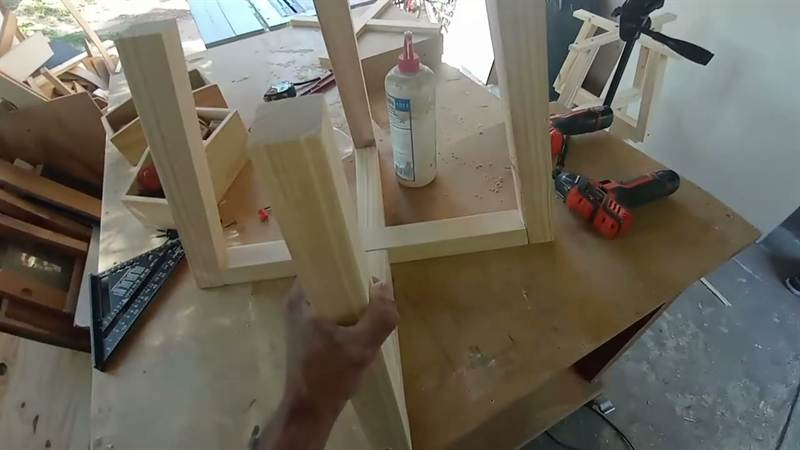
6:38 Revisa los 90 grados con la escuadra.
Corte por la unión, como el video: la pata llega al piso y la punta del brazo, cortada a 15°, choca contra su cara de adentro. 2 tornillos de 5 x 70 derechos a la cara de la pata, y la espiga tapa la caja. Medidas en cm.
Vista de arriba de la punta del brazo: la cara de 9 de la pata mira hacia afuera y el brazo choca en su centro.
Herramienta
Taladro, una prensa, escuadra rápida y escuadra normal.
Broca o fresa
Guía de 3 mm x 3.5 cm en la punta del brazo, en las marcas del clavo.
Tornillo
2 de 5 x 70 mm por pata, desde la cara de afuera: cruzan 3.5 cm de pata y entran 3.5 cm en el brazo.
Cola
En la punta del brazo (2 manos: es madera de punta) y en la cara de adentro de la pata, donde choca.
Taco
Espiga de 10 x 40 con cola en cada caja (paso 20).
Medidas
La pata y el brazo, los 2 en el piso. El brazo, centrado en los 9 cm de la pata. Cada pata a 15°; vista de frente, a 90°.
En un piso plano, presenta la pata contra la punta del brazo: las 2 tocan el piso y la punta inclinada del brazo asienta pareja contra la cara de adentro de la pata, en el centro de sus 9 cm.
Prénsalas, marca con un clavo por los 2 hoyos de 5 mm y quita la pata.
Guía de 3 mm x 3.5 cm en las 2 marcas de la punta del brazo, siguiendo la dirección del hoyo.
Cola en la punta del brazo (una mano delgada, 5 minutos y otra) y en la cara de la pata; prensa y pon los 2 tornillos de 5 x 70 mm.
Revisa: con la escuadra rápida, cada pata a 15°; con la escuadra normal, la pata a 90° vista de frente; y que las 4 se inclinen igual.
Ojo: la pata girada: la cara de 9 va hacia afuera y los 4.5 a lo largo del brazo.
15
Cruz de arriba sobre las patas
Video 6:47 a 7:51
Video: "esto tiene 55 cm de largo y de acá afuera me da 38, 38 y medio; habría que restar la diferencia y eso me da que hay que dejar de acá afuera 8.2... la parte de afuera iría de esta raya para adentro".
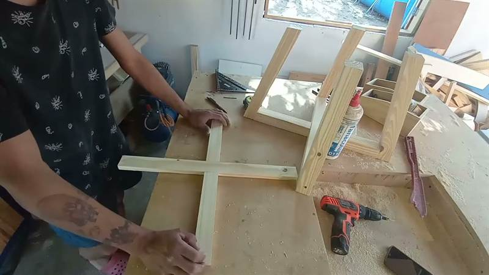
7:05 La cruz de arriba junto a la base.
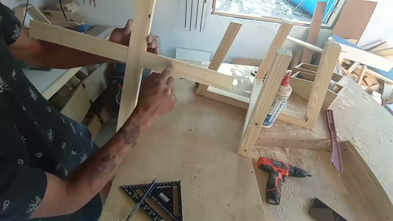
7:30 Presenta la cruz de arriba sobre las patas.
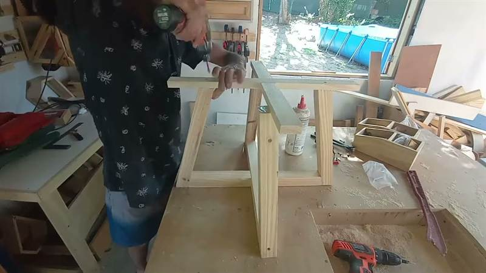
7:43 La base armada: cruz acostada encima de las patas, que se abren hacia el piso.
Mide de afuera a afuera entre las puntas de arriba de 2 patas opuestas. La raya va a (74 menos tu medida) entre 2, desde cada punta. Medidas en cm.
Cola en la punta de arriba de cada pata, 2 manos.
2 tornillos de 5 x 70 mm por pata, desde arriba, a 14.7 cm de la punta, uno a cada lado del centro.
Herramienta
Cinta, lápiz, taladro, un clavo y escuadra.
Broca o fresa
Los hoyos de la cruz ya están (paso 13). En la punta de arriba de cada pata, guía de 3 mm x 4 cm en la marca del clavo.
Tornillo
2 de 5 x 70 mm por pata: entran 3.5 cm en la pata.
Cola
En la punta de arriba de cada pata (2 manos).
Medidas
De afuera a afuera debería dar 49.3 cm. Con 49.3, la raya va a 12.35 cm de cada punta (en el dibujo, 12.4).
Mide de afuera a afuera entre las puntas de arriba de 2 patas opuestas. Debería dar 49.3 cm.
La raya va a (74 menos tu medida) entre 2, desde cada punta: con 49.3, a 12.35 cm. La pata queda centrada debajo del brazo y sale 1 cm a cada lado (la pata mide 9 y el brazo 7).
Presenta la cruz con la cara de los hoyos hacia arriba, marca con un clavo y haz la guía de 3 mm x 4 cm en la punta de cada pata.
Cola en la punta de arriba de cada pata (2 manos) y 2 tornillos de 5 x 70 mm por pata.
Revisa: las 2 diagonales de pata a pata iguales y que la base no cojee en el piso.
Ojo: confiar en el 12.35 sin medir: si una pata quedó un poco más abierta, la cruz sale torcida.
D. El círculo y el canto
16
Marcar el centro
Video 7:51 a 8:35
Video: "corté un cuadro de 66" (para un círculo de 60) y tira las 2 diagonales.
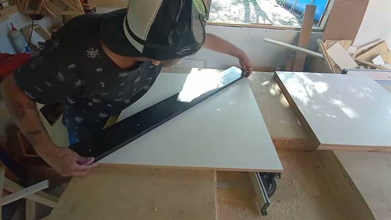
8:23 Tira las diagonales con una regla larga.
Las diagonales del tablero se cruzan en el centro. Clavo en el centro y lápiz a 40 cm. En la cara de abajo.
Herramienta
Regla larga, lápiz y un listón con un clavo.
Broca o fresa
No lleva.
Tornillo
No lleva.
Medidas
El tablero pegado mide unos 91 x 84 a 87 cm. Lápiz a 40 cm del clavo.
Las diagonales de un rectángulo también se cruzan en el centro.
Hazlo en la cara de abajo, que es donde queda el hoyo del pivote.
Dibuja el círculo con un listón: clavo en el centro y lápiz a 40 cm.
Ojo: todo en la cara de abajo: ahí queda el hoyo del pivote.
17
Cortar el círculo
Video 8:35 a 9:05
Video: "vamos a tener que hacer un hueco y vamos a poner un palito" (el pivote) y corta con el router montado en un brazo largo con varios hoyos.
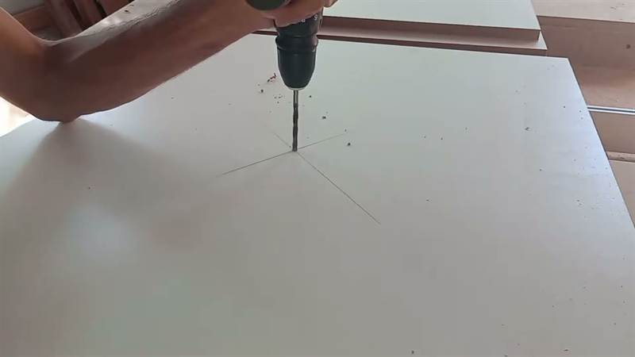
8:37 El hoyo del centro para el palito (pivote).
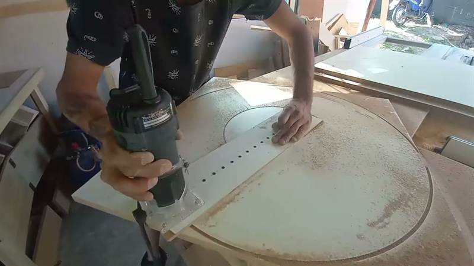
8:46 El router en un brazo largo con varios hoyos.
Arriba: el compás del router, 40.0 cm del pivote al filo de la broca más cercano al centro. Abajo: primero la broca recta hasta donde llegue; después, volteada, la broca al ras.
Herramienta
Caladora. Router Stanley ST55 con un compás de plywood o MDF de 6 mm de unos 10 x 60 cm.
Broca o fresa
Recta de 12 mm del juego Wadfow SR014, pasadas de 3 mm. Después, de corte al ras de 12.7 mm con balero.
Tornillo
Los de la base del router, para fijar la tira (usa la base de plástico de plantilla).
Medidas
Pivote a 40.0 cm del filo de la broca más cercano al centro. Caladora de 3 a 5 mm afuera de la línea. Pivote: broca o clavo de 3 mm en un hoyo de 1 cm de hondo.
Caladora de 3 a 5 mm afuera de la línea, con la cara bonita hacia abajo: la caladora astilla la cara de arriba del corte.
Compás del router: una tira de plywood o MDF de 6 mm de unos 10 x 60 cm atornillada a la base del Stanley ST55 en lugar de la base de plástico (úsala de plantilla para los tornillos). El hoyo del pivote va a 40.0 cm del filo de la broca más cercano al centro, no del centro de la broca.
Pivote: una broca o clavo de 3 mm en un hoyo de 1 cm de hondo en el centro de la cara de abajo. Que no traspase.
Broca: la recta de 12 mm del juego Wadfow SR014. Pasadas de 3 mm de hondo, vuelta completa en cada una. Con el router encima, gira en contra de las agujas del reloj.
La broca no alcanza los 3.2 cm (mide su largo de corte). Corta hasta donde llegue, voltea la tapa y termina con la broca de corte al ras de 12.7 mm con balero: el balero corre sobre la parte que ya quedó perfecta.
Ojo: medir el radio al centro de la broca (sale 6 mm más chica), bajar más de 3 mm por pasada (quema y jala) o un hoyo de pivote que traspasa la tapa.
18
Redondear el canto
No sale en el video: él pinta el canto de la melamina (9:48).
Corte del canto de la tapa: arriba, redondeo de 1/4" con balero; abajo, solo lija. Medida en cm.
Herramienta
Router.
Broca o fresa
La "de esquina R-6.3 mm" del juego SR014 (es redondeo de 1/4"), con balero.
Tornillo
No lleva.
Medidas
Canto de arriba: redondeo de 1/4". Canto de abajo: lija 120.
Lija el canto antes.
En el canto de arriba, primero una pasada baja y luego la completa, en contra de las agujas del reloj.
El canto de abajo, solo lija 120 para quitar el filo.
Ojo: un canto con bultos: el balero los copia. Lija el canto antes.
E. Unir y tapar
19
Perforar la tapa y atornillarla
Video 9:05 a 9:39
Video: tapa boca abajo, base de cabeza encima, y tornillos por la cruz de arriba hacia la tapa.
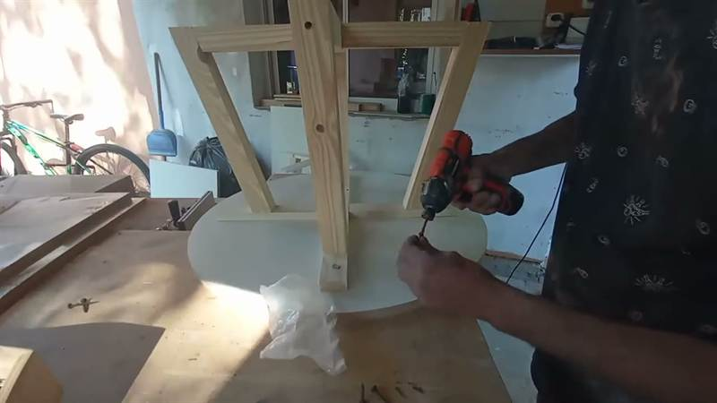
9:07 Tapa boca abajo y la base de cabeza encima.
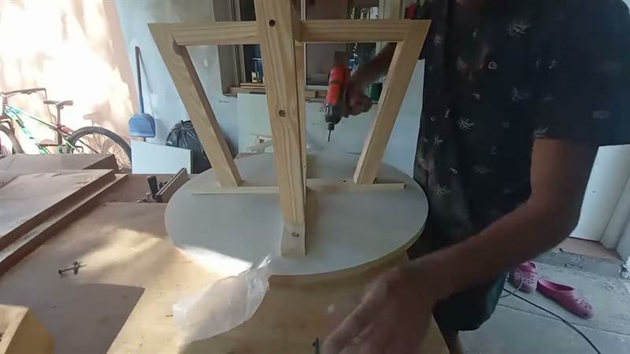
9:31 Atornilla por la cruz hacia la tapa.
Corte por un tornillo de la tapa, dibujado en posición de uso (se arma boca abajo). Medidas en cm.
En el brazo que cruza las tablas, el paso es una ranura de 1 cm a lo largo del brazo (2 hoyos juntos): la tapa se mueve con la humedad. Ver la vista de arriba de la cruz de arriba.
Herramienta
Taladro, banderita de masking y una cobija.
Broca o fresa
En la cruz: caja de 10 mm a 2.7 cm de hondo desde abajo y paso de 4 a 5 mm. En la tapa: guía de 3 mm con banderita a 2.0 cm.
Tornillo
2 de 40 mm por brazo (8 por mesa). Entra 2.2 cm en la tapa y deja 1 cm sin tocar.
Cola
Sin cola (a lo sumo un punto en el centro del cruce).
Medidas
Base centrada: 3.0 cm de cada punta de la cruz al canto. Tornillos a 5 cm y a 28 cm de la punta, en el centro del brazo (lejos de las patas, que van de 12.4 a 17.0, y del cruce).
Tapa boca abajo sobre una cobija; base de cabeza, centrada (3.0 cm de cada punta de la cruz al canto).
2 tornillos de 40 mm por brazo, a 5 cm de la punta y a 28 cm de la punta.
En la cruz: caja de 10 mm a 2.7 cm de hondo desde abajo y paso de 4 a 5 mm. En el brazo que cruza las tablas de la tapa, el paso es una ranura de 1 cm a lo largo del brazo (2 hoyos juntos).
En la tapa: guía de 3 mm con banderita a 2.0 cm. Así el tornillo entra 2.2 cm y deja 1 cm sin tocar.
Cuándo: perfora todo antes del acabado y atornilla al final, cuando la tapa y la base ya tengan su barniz.
Ojo con la lista maestra y la guía del 24 nov: dicen avellanar 5.6 y 5.2 cm desde abajo; eran para la cruz de canto, de 7 cm. Con la cruz acostada, de 4.5, la caja es de 2.7 cm: así el tornillo de 40 mm entra 2.2 cm en la tapa y deja 1 cm sin tocar. Más honda, el tornillo se acerca a la cara de arriba.
Ojo: traspasar la tapa con la guía o pegar toda la cruz a la tapa: la tapa se raja.
20
Tapar los tornillos
Video 9:39 a 10:01
Video: "nos faltaría tapar los tornillitos".
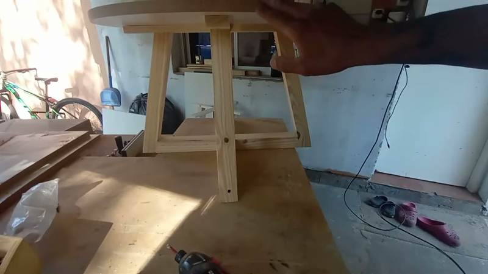
9:46 La mesa del video volteada; falta tapar los tornillos.
Cola en el hoyo, espiga a golpecitos y, a la hora, cortar a ras y lijar. Mesa 1: 8 tacos, 2 por pata cerca del piso, como el video. Mesa 2: 4.
Herramienta
Serrucho fino o el formón, y lija.
Taco
Espiga de 10 x 40 mm (tienes 20, de Larach).
Tornillo
No lleva.
Cola
En el hoyo.
Medidas
A ras de la madera.
Tu mesa 1: 8 tacos, en las cajas de los tornillos de abajo de las patas (paso 14). Los de la cruz de arriba y los de la tapa quedan escondidos: no llevan.
Mesa 2: 4 tacos, en la cruz baja.
Cola en el hoyo, espiga a golpecitos; a la hora la cortas a ras con un serrucho fino o el formón y lijas.
Ojo: cortar la espiga antes de la hora: la cola todavía no agarra y la espiga se afloja. Después del tinte se ven como puntitos más oscuros, igual que en el video.
F. El acabado
No sale en el video. Todo se hace con la base y la tapa separadas, ya perforadas, y se atornillan al final.
21
Lijar
No sale en el video. Base y tapa separadas, ya perforadas.
El orden de las lijas. Con una lámpara de lado se ve la cola que quedó.
Herramienta
Lijadora orbital, una lámpara, aspiradora y trapo.
Lija
120 y luego 150 en todo, a favor de la veta. La 80 solo donde haya marcas o cola.
Tornillo
No lleva.
Medidas
No lleva.
Lija 120 y luego 150 en todo, a favor de la veta. La 80 solo donde haya marcas o cola.
Revisa las juntas con una lámpara de lado.
Aspira y pasa un trapo apenas húmedo de diluyente mineral.
Ojo: la cola que quede no agarra tinte.
22
Comejenol (contra el comején)
No sale en el video.
Verde: donde va el Comejenol. Rojo: la cara de arriba de la tapa, donde no va.
Producto
Comejenol pintable de Fester (Larach, 5 nov).
Herramienta
Brocha de pelo. Mascarilla para vapores orgánicos, guantes y lentes.
Medidas
Sin dilución. 1 mano bien cargada; 2 en las puntas de las patas que tocan el piso, porque chupan más. Rinde de 14 a 20 m² por galón, o sea de 3.5 a 5 m² tu cuarto; las 2 mesas tienen unos 3.6 m²: alcanza justo.
Espera
no comprobado La ficha no lo dice. 24 horas, hasta que no huela a solvente y no se sienta aceitoso. Pruébalo antes en un retazo.
Dónde: la base completa, la cara de abajo de la tapa y el canto. No en la cara de arriba, donde se come.
Cómo (ficha de Fester): "se aplica sin dilución, tal como viene, con brocha de pelo... procurando saturación en la madera".
Si falta, termina con el preservante Sherwin-Williams (también es base solvente y pintable).
Tienes 2 productos contra el comején: el Comejenol pintable de Fester (Larach, 5 nov) y el Preservante para madera pintable Sherwin-Williams de 1 galón (La Mundial, 13 nov, L930). Con uno basta: usa el Comejenol, porque su ficha dice que "se usa como primario o base para recubrimiento de acabado". El galón de Sherwin queda de sobra.
Ojo: (ficha) "No usar en recintos cerrados o con poca ventilación" y "usar mascarilla para vapores orgánicos". Tu máscara de gas sirve si sus filtros son para vapores orgánicos: revísalo.
23
Tinte KAT Miel
No sale en el video.
Con trapo de algodón, a favor de la veta, parejo.
Producto
"TINTE KAT-MD317 LTR. MIEL" (Larach 22020168, en su página "Tinte Protecto Madetec Litro", color miel).
Herramienta
Trapo de algodón.
Medidas
Una mano; una segunda a la hora si lo quieres más oscuro. No se lija entre manos de tinte.
Espera
Al tacto, de 20 a 30 minutos (ficha de Pintuco, a 25°C). Antes del barniz: 2 a 3 horas. no comprobado la ficha es de Pintuco, no de Protecto.
Con trapo de algodón, a favor de la veta, parejo, y quita el sobrante antes de que seque.
Una mano; una segunda a la hora si lo quieres más oscuro.
Diluir: solo si lo quieres más claro, con thinner para laca, no con el diluyente mineral. Pruébalo en retazo.
Ficha: no encontré la de Protecto. La de Pintuco, que hace la misma línea Madetec, dice: tinte de colorantes base solvente; "diluya con Thinner... hasta alcanzar la intensidad del color deseado"; "aplique con trapo, espuma, brocha, pistola o por inmersión"; "secado (25°C) al tacto es de 20 a 30 minutos y para aplicar sellador Madetec es de 1 hora"; "no levanta la fibra". Tu barniz es de otra marca: por eso 2 a 3 horas.
Ojo: diluirlo con el diluyente mineral. Si lo quieres más claro, es con thinner para laca.
24
Barniz brillante (brocha o pistola)
No sale en el video.
Izquierda: 4 manos en la cara de arriba de la tapa, 3 en lo demás. Derecha: pistola a 15 o 20 cm.
Producto
Barniz Brillante para Muebles Sherwin-Williams Sher-Wood, "poliuretano, base solvente, interior, brillante" (etiqueta), 2 cuartos.
Herramienta
Brocha de 3", o pistola con boquilla de 1.3 a 1.5 mm. Lija 240.
Medidas
4 manos en la cara de arriba de la tapa; 3 en el canto, la cara de abajo y la base. Si falta tiempo, 3 en todo.
Espera
Entre manos, 3 a 4 horas (Minwax: "Let dry 3-4 hours. Lightly sand entire surface with 220 grit", a 25°C y 50% de humedad). no comprobado no encontré la ficha del Sher-Wood: lee la etiqueta de la lata; si dice otra cosa, manda la lata.
Prueba de seco: lija en un lugar escondido; si sale polvito blanco, ya; si se hace bolitas o se pega, espera. En las noches frías de diciembre tarda más.
Entre manos, tu lija 240, suave, y quita el polvo con un trapo apenas húmedo de diluyente mineral.
Con brocha: manos delgadas, sin diluir (Minwax: "Thinning is not recommended"), con tu brocha de 3", sin volver a pasar por donde ya está secando. Revuelve, nunca agites la lata.
Con pistola
Diluye un 10% con tu diluyente mineral Sherwin-Williams (1 parte por 9 de barniz). Si sale con gotas o "cáscara de naranja", sube a 15%. no comprobado Esto sale de foros y de la práctica común, no del fabricante.
Boquilla de 1.3 a 1.5 mm. Presión en la pistola, con el gatillo apretado: empieza en 30 psi (2 bar) y sube hasta 35 a 40 si no atomiza fino. La Wadfow WGA1506 de La Mundial dice: boquilla de 1.4 mm, 2 a 3.5 bar, 3 a 4.5 CFM.
Cuela el barniz con una media de nylon antes de llenar el vaso.
Prueba en un cartón: el abanico tiene que ser parejo, sin escupir.
A 15 o 20 cm, pistola derecha, muévete antes de apretar el gatillo, cada pasada encima de la mitad de la anterior. Primero una mano muy ligera.
La base, primero de cabeza y después parada; la tapa sobre 4 tornillos o tacos, para hacer el canto.
Con pistola se pierde de 30 a 50% del barniz: con 2 cuartos quedas justo. Si vas con pistola, compra un tercer cuarto.
Lava la pistola al terminar con diluyente mineral.
Tu compresor Truper de 80 L, según la cotización del 28 oct, da unos 4.4 CFM a 40 psi no comprobado (no está visto en su placa). Queda justo: deja que recargue entre pieza y pieza.
Comejenol y tinte con pistola: no. El Comejenol con brocha (satura mejor y no deja nube tóxica); el tinte con trapo.
Seguridad: máscara para vapores orgánicos, lentes, aire libre a la sombra y sin viento, nada de llama cerca.
Ojo: los trapos con barniz pueden prenderse solos (ficha de Minwax): échalos en un balde con agua.
25
Uso y curado
No sale en el video.
Después de la última mano.
Espera
Minwax: "After final coat, allow 24 hours before light use". El curado completo es de unos 30 días (guía del 3 nov).
Portavasos el primer mes y nada de manteles húmedos encima.
Ojo: manteles húmedos o vasos sin portavasos el primer mes.
El acabado, en orden
Antes que todo: prueba del acabado en un retazo (hoy o mañana). En 2 retazos del mismo pino: Comejenol en la mitad, al día siguiente tinte en todo y 2 manos de barniz. Te dice si el Comejenol cambia el color del tinte (el canto de la tapa lleva Comejenol y la cara de arriba no), cuánto tarda de verdad cada mano en tu casa, y si te gusta el color.
Dom 29, 17:30 · 1.5 hLijar todo 120 y 150, quitar el polvo Aspira y pasa un trapo apenas húmedo de diluyente mineral. Paso 21
Dom 29, 19:00 · 45 minComejenol con brocha Bases, cara de abajo y canto de las tapas. No en la cara de arriba. Paso 22 Espera 24 h · la ficha no lo dice
Lun 30, 17:30 · 30 minRevisar el Comejenol Lija 150 suave donde se levantó.
Lun 30, 18:00 · 1 hTinte KAT Miel con trapo Todo lo que se ve. Al tacto en 20 a 30 min; una segunda mano a la hora si lo quieres más oscuro. Paso 23 Espera 2 a 3 h antes del barniz
Lun 30, 21:00 · 1 hBarniz, mano 1, todo Paso 24 Espera 3 a 4 h (Minwax) · lija 240 suave
Mar 1 dic, 6:00 · 1 hLija 240 suave y mano 2, todo Antes del trabajo. Espera 3 a 4 h · lija 240
Mar 1, 17:30 · 1 hLija 240 y mano 3, todo Espera 3 a 4 h · lija 240
Mar 1, 21:30 · 30 minLija 240 y mano 4 Solo cara de arriba y canto de las tapas.
Mié 2, 17:30 · 1 hAtornillar las tapas a las bases Con cuidado, sobre una cobija. Paso 19
Mié 2, 21:3024 h desde la última mano: ya se pueden usar con cuidado Paso 25
Hacia el 2 de eneroCurado completo (unos 30 días) Portavasos el primer mes y nada de manteles húmedos encima.
Los tiempos del barniz son de la ficha de Minwax Fast-Drying Polyurethane, el mismo tipo de producto: no encontré la ficha del Sher-Wood. Si cambias al Minwax Rojo Caoba: dejar de 5 a 15 minutos y quitar el sobrante, segunda mano a las 4 a 6 horas, y el poliuretano "after a minimum of 8 hours".
Calendario desde el sábado 28 de noviembre
Supone: el fin de semana completo para las mesas (unas 12 horas cada día), las tardes del lunes y martes desde las 5:30 pm, y que cada mano de barniz seca en 4 horas.
Día
Hora
Qué
Cuánto
Sáb 28
7:00
Medir la humedad de todo
30 min
7:30
Cepillar las 12 tablas de las tapas y cortarlas a 91
2.5 h
10:00
Pegar la tapa 1; a las 11:00 soltarla y pegar la tapa 2; soltar la tapa 2 a las 12:30 (mientras, sigues con la base)
2 h
12:00
Cepillar y cortar a lo largo las piezas de las 2 bases
1.5 h
13:30
Las 8 medias maderas (4 por mesa)
3 h
16:30
Puntas a 15° de la cruz del piso y las 4 patas a 15° (mesa 1); patas rectas (mesa 2)
1.5 h
18:00
Pegar y atornillar las 4 cruces
45 min
Dom 29
7:00
Hoyos y cajas; base de la mesa 1 (pasos 13 a 15)
2.5 h
9:30
Base de la mesa 2
2 h
11:30
Aplanar las 2 tapas (ya tienen 24 h)
2 h
13:30
Los 2 círculos y los cantos
3 h
16:30
Presentar las tapas en las bases y perforar (paso 19, sin atornillar)
1 h
17:30
Lijar todo 120 y 150, quitar el polvo
1.5 h
19:00
Comejenol: bases, cara de abajo y canto de las tapas
45 min
Lun 30
17:30
Revisar el Comejenol (24 h); lija 150 suave donde se levantó
30 min
18:00
Tinte KAT Miel con trapo, todo lo que se ve
1 h
21:00
Barniz, mano 1, todo
1 h
Mar 1 dic
6:00
Lija 240 suave y mano 2, todo (antes del trabajo)
1 h
17:30
Lija 240 y mano 3, todo
1 h
21:30
Lija 240 y mano 4, solo cara de arriba y canto de las tapas
30 min
Mié 2
17:30
Atornillar las tapas a las bases, con cuidado, sobre una cobija
1 h
21:30
24 h desde la última mano: ya se pueden usar con cuidado
Jue 3
Llevarlas a Cotoni. Portavasos el primer mes. Curado completo hacia el 2 de enero
¿Llegan al 3 de diciembre? Sí, para uso con cuidado el miércoles 2 en la noche, pero muy justo: solo si el fin de semana es completo para las mesas, el Comejenol seca en 24 horas y cada mano de barniz en 4. Con un solo atraso (una mano que tarda de más en las noches frías, o un domingo con reunión), quedan el jueves 3. Si el sábado 28 en la noche va el piso o la pintura de Cotoni, no llegan.
Qué adelantar esta semana para tener margen
Hoy o mañana: la prueba del acabado en retazos. Te da los tiempos reales de tu casa.
Miércoles 25 y jueves 26 en la noche: medir, cepillar y pegar las 2 tapas (unas 5 horas). Le quita casi media jornada al sábado.
Viernes 27 en la noche: aplanar las tapas y cortar los círculos (unas 5 horas). El domingo queda libre para el Comejenol más temprano y el lunes puedes empezar el barniz más temprano.
Si falta tiempo: 3 manos en la tapa en vez de 4. Se usan el miércoles 2 desde las 5:30 pm.
La pistola no adelanta el secado: solo la aplicación. Úsala solo si ya la probaste.
Mesa 2: patas rectas con cruz
No sale en el video. Sale de la guía del 3 nov, con los tornillos cambiados a lo que hay en La Mundial.
Mesa 2 vista de frente, a escala. El poste del centro es la pata del otro brazo, que se ve por su cara de 9 cm. Medidas en cm.
Pieza
Cuántas
Medida
Madera
Puntas
Tablas de la tapa
6
91 cm
1 1/2 x 6
Rectas
Patas
4
49.8 cm
2x4
Rectas, a 90°
Cruz de arriba
2
70 cm
2x3
Rectas
Cruz baja
2
53.5 cm
2x4 que sobra, rebajado a 7 cm de alto con la circular
Rectas
Tapa: pasos 2 a 5 y 16 a 19, iguales.
Medias maderas iguales a los pasos 7, 8 y 12.
Patas a la cruz de arriba: cruz de cabeza, raya a 3.75 cm de cada punta para la cara de afuera de la pata, cola y 2 tornillos de 5 x 70 mm por pata desde la cara que va contra la tapa (caja de 10 mm a 3.5 cm). Cada pata a 90° en los 2 sentidos.
Cruz baja: cara de abajo a 8 cm del piso. Cola en las puntas, 1 tornillo de 5 x 70 mm por punta desde la cara de afuera de la pata (caja de 10 mm a 1 cm) y espiga de 10 x 40 con cola (paso 20). Son 4 tacos a la vista.
La tapa queda 5 cm afuera de las puntas de la cruz de arriba.
Si al final quieres las 2 como el video: con las medidas del 25 nov la madera alcanza, pero justa. De cada pieza de 2x4 salen 4 patas de unos 57 y queda un pedazo de unos 76, de donde sale una cruz de arriba de 74 rebajada a 7 de ancho; los 4 brazos del piso (68) salen del 2x3 de 10 pies. Cuenta hecha con cortes de 3 mm; pídemela completa antes de cortar.
Lo que falta comprar
Precios de la página de La Mundial el 24 nov a la 1:45 pm, con ISV. La página dice "disponible", pero no dice en qué tienda. Ya tienes: sargentos, router, brocas SR014, brocas de 1 a 10 mm, formones, Comejenol, preservante, tinte, 2 barnices, diluyente, espigas, tornillos de 40 mm, masilla, lijas 120, 150 y 240, brochas, guantes, anteojos, medidor y la cola.
Qué
Para qué
Precio
Link
Escuadra para carpintero 7" Wadfow WSR1107 (aluminio, triangular, con escala de grados y pivote)
Es la escuadra que usa Lenny para marcar los 15° y sirve de guía para la circular
Falsa escuadra: La Mundial no tiene. En Larach no se pudo buscar (su buscador pide una sesión). La única confirmada el 24 nov es la Truper EFT-8 en Fierros, L135, "Disponible Online", unos 2 días de entrega: https://fierros.com/productos/escuadra-carpintero-truper-eft-8-para-angulo-14382. Con la escuadra de grados de L61 te basta para estas mesas.
Sin precio: una tira de plywood o MDF de 6 mm de unos 10 x 60 cm para el compás del router. La Mundial solo vende la lámina entera (MDF de 6 mm, L485). Pide un retazo en una maderería.
Opcional
Qué
Cuándo
Precio
Link
Pistola Wadfow WGA1506, 600 cc, boquilla 1.4 mm
Solo si no tienes pistola (la lista dice "Después")
Con la pistola, el tercer barniz y el thinner: L184 + L822 = L1,006.
Lo que no se pudo comprobar
La base del 25 nov sale de los cuadros del video (6:00 a 6:25, 7:43, 10:00) y de cuentas: no está armada ni probada. Antes de cortar las 4 patas, corta una pata y un brazo y preséntalos en seco en el piso.
Tu circular: no sé si se inclina a 15° (bisel) para las puntas de las patas. Si no se inclina, avísame.
Qué tan firme queda: la unión es la del video (tornillo de 5 x 70 con 3.5 cm en la punta del brazo y cola). No está calculada ni probada con peso.
Ficha del barniz Sherwin-Williams Sher-Wood: no la encontré. Los tiempos son de la ficha de Minwax, que es el mismo tipo de producto.
Ficha del tinte Protecto Madetec MD-317 Miel: uso la de Pintuco Colombia, que es la misma línea Madetec, pero no es seguro que sea idéntico.
Cuánto esperar después del Comejenol: la ficha de Fester no lo dice. Las 24 horas son un cálculo; la prueba en retazo lo confirma.
La dilución y la presión de la pistola salen de foros y de la ficha de la pistola Wadfow, no del fabricante del barniz.
Herramientas que no sé si tienes: ingletadora, pistola, regla larga, prensas chicas. Tampoco el largo de corte de las brocas Wadfow SR014 (mídelo) ni los CFM reales de tu compresor.
Las medidas de las piezas cepilladas. Todo está calculado con 4.5 x 9, 4.5 x 7 y 3.2.
Existencia por tienda en La Mundial, y la falsa escuadra en Larach.
Del video: el grueso exacto de sus piezas no se dice; se vio en los cuadros y es aproximado.
El medidor: la factura de La Mundial dice "Total ETWM01, 2 a 70%" y la lista maestra dice TETWM23. Hay que revisar cuál es.
Los dibujos del tablero de la tapa muestran las tablas y los sargentos donde dice la guía, pero el ancho de cada tabla no está medido: es de muestra.